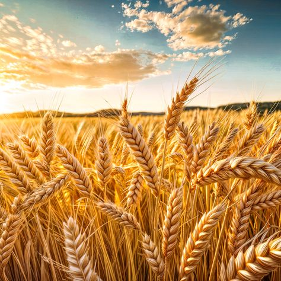
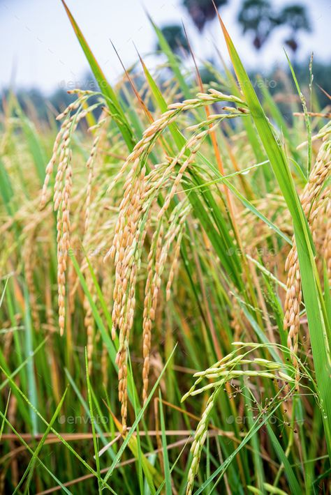
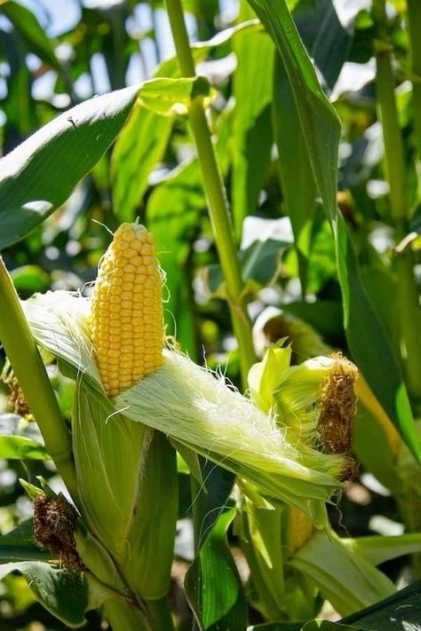
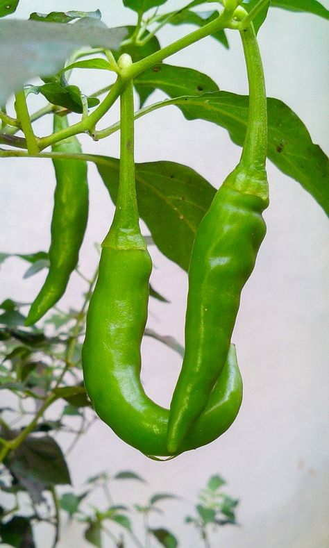
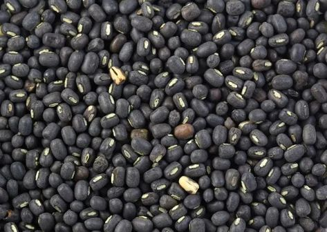
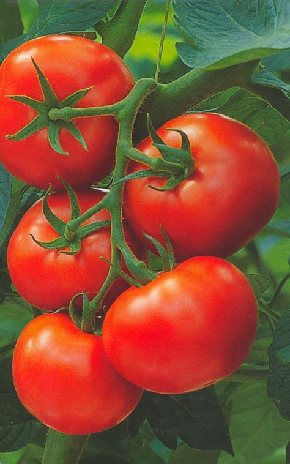
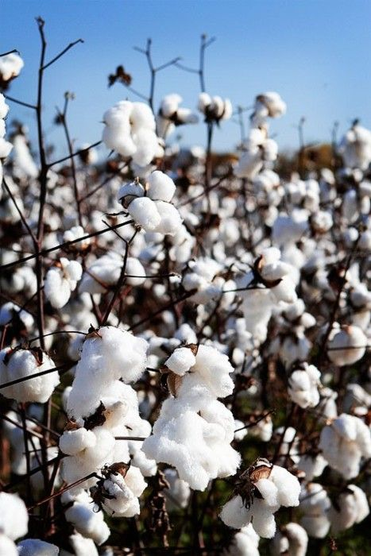

Wheat
Wheat is a staple crop grown worldwide, used for making flour, bread, and other food products.
Check Market Price




Black Gram
Black gram is a rich source of protein and commonly used in Indian cuisine.
Check Market Price
